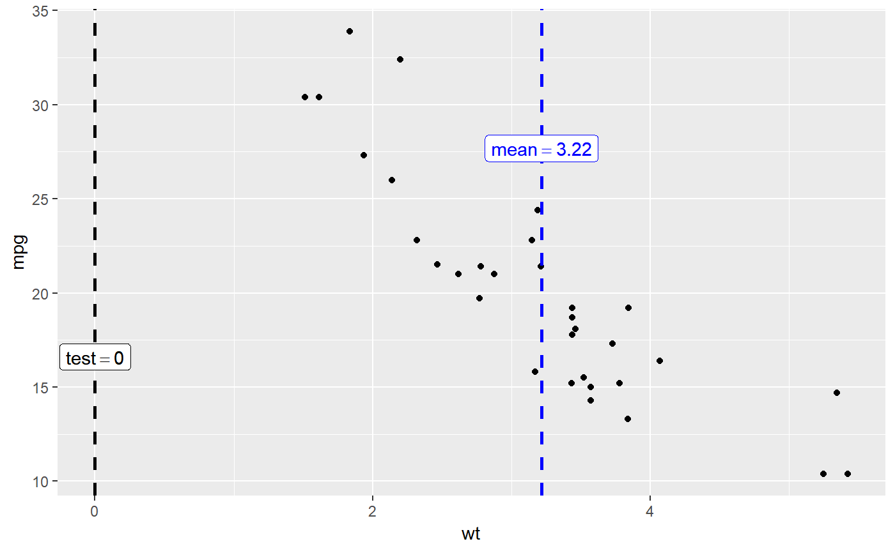

x-axis variable.R/helpers_gghistostats.R
histo_labeller.RdHelper function for adding centrality parameter value and/or a
test value for the continuous, numeric x-axis variable.
histo_labeller(plot, x, y.label.position, centrality.para = "mean", centrality.color = "blue", centrality.size = 1, centrality.linetype = "dashed", centrality.line.labeller = TRUE, centrality.k = 2, test.value = 0, test.value.line = FALSE, test.value.color = "black", test.value.size = 1, test.value.linetype = "dashed", test.line.labeller = TRUE, test.k = 0)
| plot | A |
|---|---|
| x | A numeric variable. |
| centrality.para | Decides which measure of central tendency ( |
| centrality.color | Decides color for the vertical line for centrality
parameter (Default: |
| centrality.size | Decides size for the vertical line for centrality
parameter (Default: |
| centrality.linetype | Decides linetype for the vertical line for
centrality parameter (Default: |
| centrality.line.labeller | A logical that decides whether line labels
should be displayed for the centrality.para line (Default: |
| centrality.k | Integer denoting the number of decimal places expected
for centrality parameter label. (Default: |
| test.value | A number specifying the value of the null hypothesis
(Default: |
| test.value.line | Decides whether test value is to be displayed as a
vertical line (Default: |
| test.value.color | Decides color for the vertical line denoting test
value (Default: |
| test.value.size | Decides size for the vertical line for test value
(Default: |
| test.value.linetype | Decides linetype for the vertical line for test
value (Default: |
| test.line.labeller | A logical that decides whether line labels should
be displayed for test.value line (Default: |
| test.k | Integer denoting the number of decimal places expected for
|
library(ggplot2) # creating a ploton which lines and labels are to be superposed p <- ggplot(mtcars, aes(wt, mpg)) + geom_point() # computing `y`-axis positions for line labels y_label_pos <- median( x = ggplot2::layer_scales(p)$y$range$range, na.rm = TRUE ) # adding labels ggstatsplot:::histo_labeller( plot = p, x = mtcars$wt, y.label.position = y_label_pos, test.value.line = TRUE )